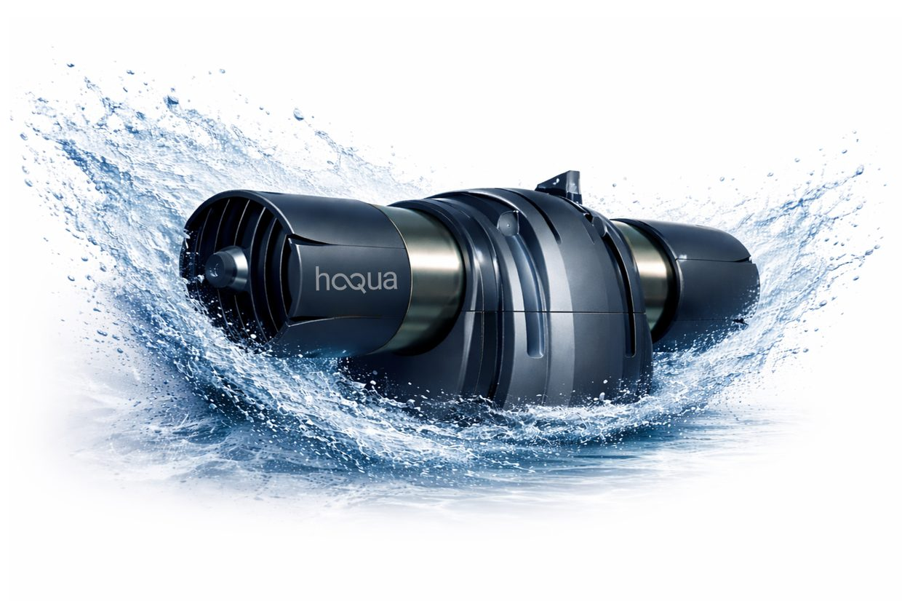
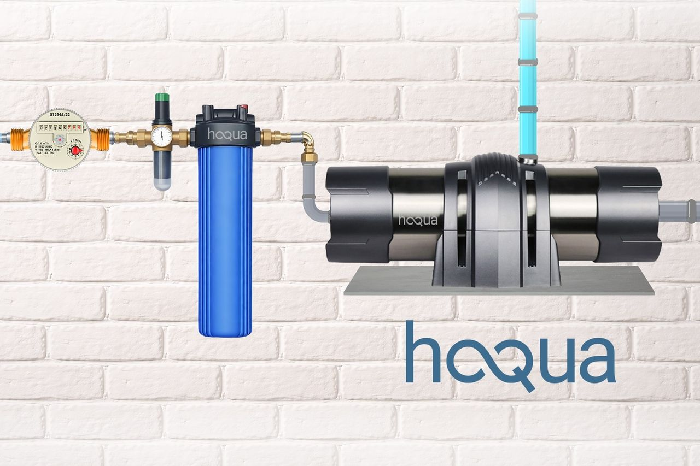
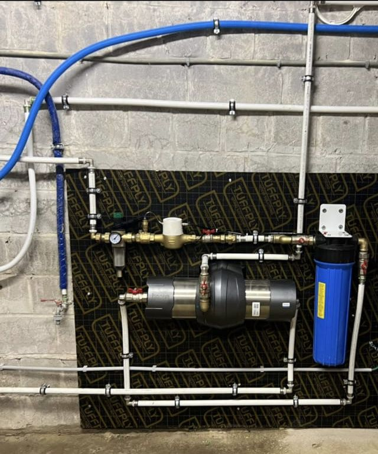

Haqua-Q, le système d'ultrafiltration complet : une eau plus saine dans toute la maison — sans produits chimiques.
Réductions observées sur eau de ville en Wallonie avec le système complet Haqua-Q (ultrafiltration + charbon actif — rapport technique, données indicatives) :
| Paramètre | Avant | Après système Haqua-Q | Réduction observée |
|---|---|---|---|
| Microplastiques (>0,01 µm) | 100–500 part./L | < 1 part./L | > 99 % |
| Bactéries totales | 10–200 UFC | Non détectables | > 99,99 % |
| PFOA / PFOS (PFAS) | 10–50 ng/L | 1–5 ng/L | 80–95 % |
| Chlore libre (goût/odeur) | 0,3 mg/L | < 0,05 mg/L | > 85 % |
| Pesticides (multi-résidus) | 0,05–0,2 µg/L | < 0,01–0,08 µg/L | 60–85 % |
| Plomb | 5–10 µg/L | < 1–2 µg/L | 80–95 % |
| Minéraux (TDS) | 280–420 ppm | conservés (± 10 ppm) | ≈ 0 % — voulu |
Valeurs indicatives issues du rapport technique (eau de ville, Wallonie) — la performance réelle varie selon la qualité d'eau locale, le débit et l'entretien. Rapport complet disponible sur demande. Haqua-Q n'est pas un dispositif médical.
Une barrière physique, pas une promesse : une membrane PAN (polyacrylonitrile) à 0,01 micron, une technologie d'ultrafiltration utilisée depuis des années dans l'industrie pharmaceutique et médicale — enfin adaptée à l'habitation.
La membrane d'ultrafiltration PAN à 0,01 µm retient microplastiques, bactéries, virus et la grande majorité des particules fines par simple barrière physique.
Le filtre charbon actif haute capacité (0,05 µm) réduit le chlore, améliore goût et odeur, et réduit de nombreux composés organiques — dont PFAS/PFOS, pesticides et résidus médicamenteux.
L'eau garde ses minéraux naturels (mesure TDS quasi inchangée), sans reminéralisation artificielle.
Le système fonctionne avec la pression du réseau, sans consommation électrique — seule l'option d'automatisation du rinçage utilise une électrovanne.
Un rinçage par mois de quelques litres suffit — manuel, ou automatique avec l'option d'automatisation. Module conçu pour 5 ans.
Installé après le compteur, il couvre boisson, cuisson et douche — pas un simple filtre sous-évier.
Installé juste après votre compteur d'eau par un professionnel — y compris dans un espace réduit.
Visite technique gratuite : on vérifie votre arrivée d'eau et la configuration.
Pose du filtre charbon actif haute capacité (chlore, goût, odeur).
Pose du module d'ultrafiltration 0,01 µm — toute la maison est couverte.
Contrôle & explications : un simple rinçage mensuel suffit, on vous montre tout.

Le système complet : compteur → filtre charbon actif → module d'ultrafiltration Haqua-Q.

Installation réelle : système complet posé par un professionnel.
Elle l'est — et Haqua-Q n'est pas là pour dire le contraire. C'est une barrière supplémentaire contre ce que les normes tolèrent encore (microplastiques, traces de PFAS et de pesticides) et contre le goût du chlore. Une question de confort et de tranquillité sur 10 ou 20 ans.
Une carafe traite un litre à la fois, au charbon seul, avec des cartouches à racheter sans fin — et ne retient ni bactéries ni microplastiques fins. Haqua-Q traite toute la maison avec une membrane à 0,01 µm.
Un rinçage par mois de quelques litres suffit à entretenir le module — 4 à 5 minutes, manuellement ou automatiquement (option d'automatisation). Le module est conçu pour 5 ans ; la cartouche du filtre charbon actif se remplace périodiquement, une manipulation simple.
Un professionnel, juste après votre compteur d'eau — y compris dans un espace réduit. La visite technique et le devis sont gratuits, en Wallonie, à Bruxelles et au Luxembourg.
Le système est documenté : rapport technique avec mesures avant/après (voir tableau plus haut), fabrication ISO 9001, marquage CE. Les documents sont consultables sur demande.
Recevez votre devis personnalisé — gratuit, sans engagement, rappel sous 24h ouvrées. Conseil et installation de proximité en Wallonie, à Bruxelles et au Luxembourg.
Je reçois mon devis gratuit